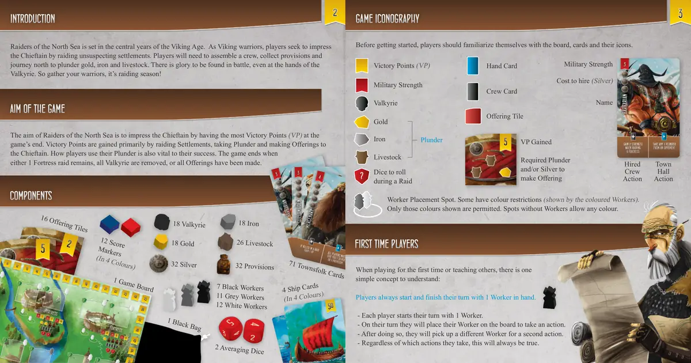
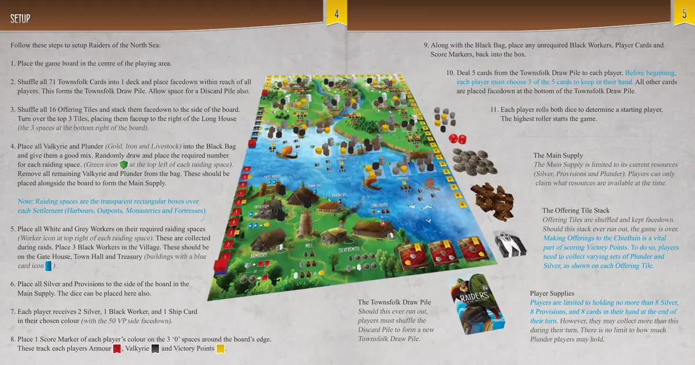
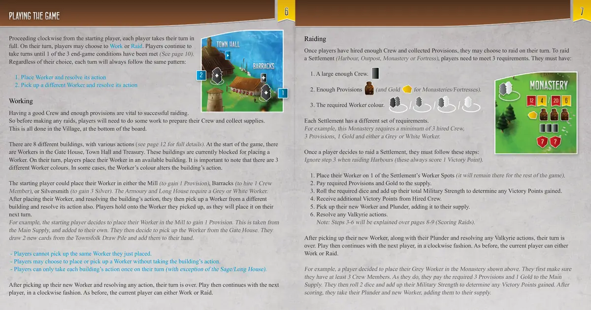
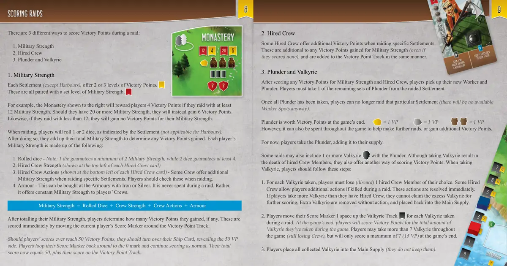
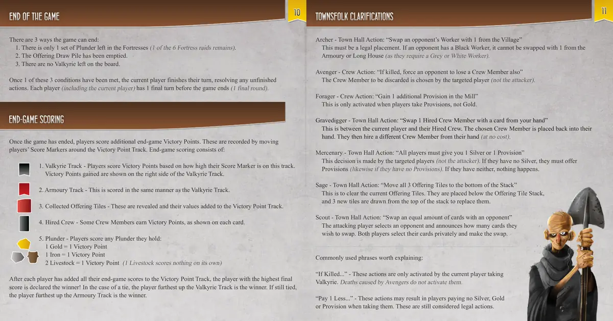
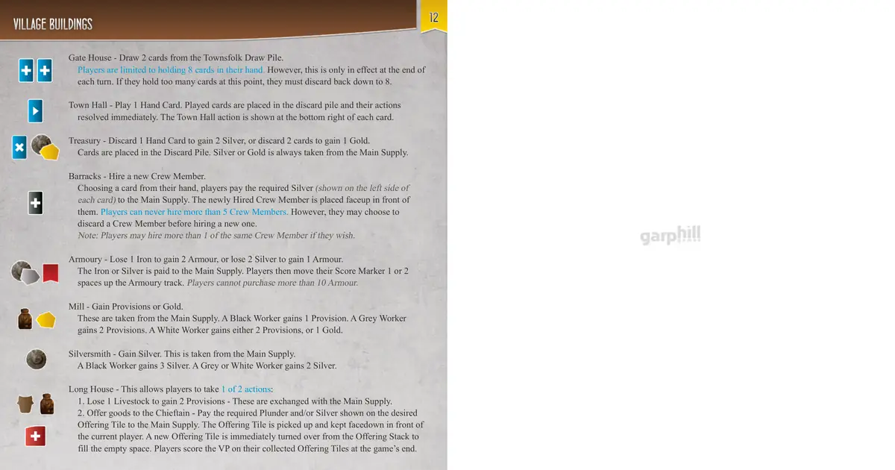

⚓ 北海劫掠者
Raiders of the North Sea · 设计：Shem Phillips · Garphill Games 出版 · 2–4 人 · 官方英文规则书全文翻译（7 页 · AI 辅助机翻）
本页收录《北海劫掠者》（Raiders of the North Sea, 2015）的原版官方规则书全部 7 页（底本：Garphill Games 官方，Raiders_Web_Rulebook_Spread.pdf?v=3702995972290410344），逐页随图排列，点击任意图片即可放大查看；每页下方默认折叠了该页的 AI 辅助中文机翻对照，需要时可展开。规则内容归 Garphill Games 及版权方所有，收录仅供个人学习查阅。
整理说明：机翻对照按本站术语口径对齐（牌库/手牌/回合/轮/板块/指示物等），PDF 图文混排页的语序可能与原书视觉顺序略有出入；规则细节请一律以页面上方原书页面为准。
📝 第 1 页 AI 机翻对照（点击展开）
游戏设计 - shem phillips
插画 - mihajlo dimitrievski
平面设计与排版 - shem phillips
版权 2015 garphill games
www.garphill.com

📝 第 2 页 AI 机翻对照（点击展开）
71 张平民卡牌
4 张船只卡牌
（4种颜色）
16 张献祭板块
组件
1 张游戏版图
12 个记分标记
（4种颜色）
7 个黑色工人
11 个灰色工人
12 个白色工人
18 个女武神
32 份补给
2 个平均骰子
1 个黑色布袋
32 枚银币
18 枚金币
18 块铁
26 头牲畜
游戏目标
介绍
《北海掠夺者》(Raiders of the North Sea)的目标是在游戏结束时拥有最多的胜利点(VP)。胜利点主要通过袭击定居点、掠夺战利品和向酋长献祭获得。玩家如何使用他们的战利品也对其成功至关重要。当剩余的1次要塞袭击、所有女武神被移除或所有献祭已完成时，游戏结束。
《北海掠夺者》设定在维京时代的中期。作为维京战士，玩家通过袭击毫无防备的定居点来向酋长展示自己的实力。玩家需要组建船员、收集补给并向北航行以掠夺黄金、铁和牲畜。即使在女武神手中，战斗中也能找到荣耀。所以召集你的战士，掠夺季节开始了！
游戏图标
在开始之前，玩家应该熟悉版图、卡牌及其图标。
第一次游玩或教导他人时，有一个简单的概念需要理解：
玩家总是以1个工人开始并结束他们的回合。
- 每个玩家以1个工人开始他们的回合。
- 在他们的回合中，他们会将工人放在版图上执行一个行动。
- 之后，他们会拿起另一个工人执行第二个行动。
- 无论他们执行什么行动，这一点总是成立的。
胜利点(VP)
军事力量
女武神
铁
掠夺
船员卡牌
黄金
手牌
工人放置点。有些有颜色限制（由彩色工人表示）。
仅允许显示的颜色。没有工人的点允许任何颜色。
牲畜
献祭板块
袭击时需要投掷的骰子
获得的VP
进行献祭所需的掠夺和/或银币
军事力量
雇佣成本（银币）
名称
已雇佣
船员
行动
市政厅
行动
新手玩家
?

📝 第 3 页 AI 机翻对照（点击展开）
设置
按照以下步骤设置《北海掠夺者》(Raiders of the North Sea)：
- 将游戏版图放置在游戏区域的中央。
- 将全部71张平民牌(Townsfolk Cards)洗成1副牌库，面朝下放置在所有玩家都能触及的位置。这构成了平民牌摸牌堆。同时也要为弃牌堆留出空间。
- 将全部16张献祭牌(Offering Tiles)洗混，面朝下叠放在版图旁边。翻开顶部的3张牌，将它们面朝上放置在长屋(Long House)的右侧（版图右下角的3个空间）。
- 将全部女武神(Valkyrie)和掠夺物(Plunder)（包括金币(Gold)、铁(Iron)和牲畜(Livestock)）放入黑色布袋(Black Bag)中并充分混合。随机抽取并放置每个掠夺空间所需数量的掠夺物。每个掠夺空间左上角有绿色图标 。从布袋中移除所有剩余的女武神和掠夺物。这些应放置在版图旁边，形成主供应区(Main Supply)。
注意：掠夺空间(Raiding spaces)是位于每个定居点上方的透明矩形框（包括港口(Harbours)、前哨站(Outposts)、修道院(Monasteries)和要塞(Fortresses)）。
- 将所有白色和灰色工人(Workers)放置在它们所需的掠夺空间上（每个掠夺空间右上角有工人图标 ）。这些工人在掠夺过程中被收集。在村庄(Village)中放置3个黑色工人。这些工人应放置在城门(Gate House)、市政厅(Town Hall)和金库(Treasury)上（带有蓝色卡牌图标 的建筑）。
- 将所有银币(Silver)和粮食(Provisions)放置在版图旁边的主供应区中。骰子也可以放在这里。
- 每位玩家获得2枚银币、1个黑色工人和1张他们所选颜色的船只卡(Ship Card)（带有50 VP的一面朝下）。
- 将每位玩家颜色的1个分数标记(Score Marker)放在版图边缘的3个"0"空间上。这些标记追踪每位玩家的盔甲 、女武神 和胜利点 。
- 与黑色布袋一起，将任何不需要的黑色工人、玩家卡(Player Cards)和分数标记放回盒中。
- 从平民牌摸牌堆中给每位玩家发5张牌。开始前，每位玩家必须从5张牌中选择3张留在手中。所有其他牌面朝下放置在平民牌摸牌堆的底部。
- 每位玩家掷两个骰子以确定起始玩家。点数最高者开始游戏。
主供应区
主供应区(Main Supply)仅限于其当前资源（银币、粮食和掠夺物）。玩家只能获取当时可用的资源。
献祭牌堆
献祭牌(Offering Tiles)被洗混并面朝下保存。如果这个牌堆用完，游戏结束。向酋长(Chieftain)献祭是获得胜利点的重要部分。为此，玩家需要根据每张献祭牌所示收集不同的掠夺物和银币组合。
玩家资源
玩家在自己的回合结束时最多只能持有8枚银币、8份粮食和8张手牌。然而，他们可以收集超过这个数量的资源。
在其回合期间。玩家持有的战利品数量没有限制。
镇民牌库
如果这个牌库用完，
玩家必须洗混弃牌堆来形成一个新的
镇民牌库。

📝 第 4 页 AI 机翻对照（点击展开）
游戏进行
从起始玩家开始，按顺时针方向，每位玩家依次完整地进行自己的回合。在自己的回合中，玩家可以选择工作或劫掠。玩家继续轮流进行，直到满足3个游戏结束条件中的1个（参见第10页）。无论选择如何，每个回合都将遵循相同的模式：
1. 放置工人并执行其行动
2. 拿起另一个工人并执行其行动
工作
一旦玩家雇佣了足够的船员并收集了补给，他们就可以选择在自己的回合进行劫掠。要劫掠一个定居点（港口、前哨站、修道院或堡垒），玩家需要满足3个要求。他们必须拥有：
- 足够大的船员队伍。
- 足够的补给（对于修道院/堡垒还需要金币）。
- 所需颜色的工人。
每个定居点都有不同的要求集。
例如，这个修道院要求至少雇佣3名船员、3个补给、1个金币，以及灰色或白色工人中的任意一种。
一旦玩家决定劫掠一个定居点，他们必须遵循以下步骤：
（劫掠港口时忽略第3步，这些总是得1个胜利点）
- 将他们的工人放在定居点的一个工人位上（它将留在那里直到游戏结束）。
- 向供应区支付所需的补给和金币。
- 掷出所需的骰子并计算他们的总军事力量以确定获得的胜利点数。
- 从雇佣的船员处获得额外的胜利点。
- 拿起他们的新工人和战利品，将其添加到他们的供应中。
- 解析任何女武神行动。
注意：第3-6步将在第8-9页（劫掠计分）中解释。
在拿起新工人、战利品并解析任何女武神行动后，他们的回合结束。然后游戏继续进行，按顺时针方向下一位玩家。和之前一样，当前玩家可以选择工作或劫掠。
例如，一位玩家决定将他们的灰色工人放在上面所示的修道院中。他们首先确保自己至少有3名船员。由于他们确实有，他们向主供应区支付所需的3个补给和1个金币。然后他们掷出2个骰子并计算他们的军事力量以确定获得的胜利点。计分后，他们拿走他们的战利品和新工人，将它们添加到他们的供应中。
劫掠
拥有良好的船员队伍和足够的补给对成功劫掠至关重要。因此，在进行任何劫掠之前，玩家需要做一些工作来准备他们的船员队伍和收集补给。这一切都在底部的村庄进行。
有8种不同的建筑，具有各种行动（完整细节参见第12页）。游戏开始时，门楼、市政厅和金库中有工人。这些建筑目前被阻止放置工人。
工人
在自己的回合，玩家将他们的工人放置在一个可用的建筑中。需要注意的是，有3种不同颜色的工人。在某些情况下，工人的颜色会改变建筑的效果。
起始玩家可以将他们的工人放置在磨坊（获得1份补给）、兵营（雇佣1名船员）或银匠铺（获得3枚银币）中。军械库和长屋需要灰色或白色的工人。
放置工人并解决建筑效果后，玩家会从另一个建筑中拿起一个工人并解决其效果。玩家会拿着他们拿起的工人，因为他们将在下一回合放置它。
例如，起始玩家决定将他们的工人放置在磨坊以获得1份补给。这是从主供应区获取的，并添加到他们自己的供应中。然后他们决定从城门拿起工人。他们从小镇居民抽牌堆抽取2张新卡牌，并将它们添加到他们的手牌中。
- 玩家不能拿起他们刚刚放置的同一个工人。
- 玩家可以选择放置或拿起工人而不采取建筑效果。
- 玩家在自己的回合中每个建筑只能采取一次效果（贤者/长屋除外）。
在拿起新工人并解决任何效果后，他们的回合结束。然后游戏以顺时针方式继续进行下一位玩家。和之前一样，当前玩家可以工作或突袭。

📝 第 5 页 AI 机翻对照（点击展开）
突袭计分
在突袭期间有3种不同的方式可以计分获得胜利点：
1. 军事力量
2. 雇佣船员
3. 掠夺和女武神
1. 军事力量
每个定居点（除了港口）提供2或3个等级的胜利点。
这些都与特定等级的军事力量相匹配。
例如，右侧显示的修道院将奖励玩家4个胜利点，如果他们用至少12点军事力量进行突袭。如果他们拥有20点或更多的军事力量，他们将获得6个胜利点。
同样，如果他们用少于12点的军事力量进行突袭，他们将不会因军事力量获得任何胜利点。
进行突袭时，玩家将根据定居点指示掷1个或2个骰子（港口不适用）。
这样做之后，他们加总自己的军事力量总数以确定获得的任何胜利点。每个玩家的军事力量由以下部分组成：
- 掷出的骰子 - 注意：1个骰子保证至少2点军事力量，而2个骰子保证至少4点。
- 雇佣船员力量（显示在每个雇佣船卡片的左上角）。
- 雇佣船员行动（显示在每个雇佣船卡片的左下角）- 一些船员在突袭特定定居点时提供额外的军事力量。玩家在突袭时应检查这些。
- 护甲 - 这可以在军械厂用铁或银购买。在突袭过程中从不消耗。相反，它为玩家的船员提供持续的军事力量。
军事力量 = 掷出的骰子 + 船员力量 + 船员行动 + 护甲
在总计他们的军事力量后，玩家确定他们获得了多少胜利点（如果有）。这些通过移动当前玩家的分数标记在胜利点轨道上立即计分。
如果玩家的分数达到50个胜利点，他们应该翻转他们的船卡，显示50VP面。玩家将他们的分数标记绕回0标记并继续正常计分。他们的总分现在等于50，加上他们在胜利点轨道上的分数。
在为军事力量和雇佣船员计分任何胜利点后，玩家拾取他们的新工人和掠夺。玩家必须从被突袭的定居点中拿走一组剩余的掠夺。
一旦所有掠夺都被拿走，玩家就不能再突袭那个特定的定居点了（无论如何也不会有可用的工人位置）。
掠夺在游戏结束时获得胜利点价值。
= 1 VP
= 1 VP = 1 VP
然而，它也可以在整个游戏中花费以帮助进行更多突袭，或获得额外的胜利点。
现在，玩家拿走掠夺，将其添加到他们的供应中。
一些突袭也可能在掠夺中包含1个或多个女武神。尽管获得女武神会导致
雇佣船员的死亡，他们也提供了另一种获得胜利点的方式。选择女武神时，玩家应遵循以下步骤：
- 对于每张选择的女武神，玩家必须失去（弃掉）1名自己选择的雇佣船员。一些雇佣船员如果在突袭中被杀，允许玩家执行额外行动。这些行动会立即解决。
如果玩家选择的女武神数量超过其拥有的雇佣船员，他们无法将多余的女武神用于进一步计分。多余的女武神会被移除且不执行任何行动，然后放回主供应区。
- 玩家将其计分标记在女武神轨道上向前移动1格，以对应在突袭中选择的女武神数量。游戏结束时，玩家将根据他们在整个游戏中选择的女武神总数计分。玩家在整个游戏中可以选择超过7张女武神（仍然失去船员），但在游戏结束时最多只能计分7张（15 VP）。
- 玩家将所有收集的女武神放入主供应区（他们不保留这些女武神）。
3. 掠夺和女武神
一些雇佣船员在突袭特定定居点时提供额外胜利点。这些是除了军事力量获得的任何胜利点之外的额外分数（即使他们没有获得军事分数），并以相同方式添加到胜利点轨道上。
2. 雇佣船员

📝 第 6 页 AI 机翻对照（点击展开）
镇民澄清
游戏结束
游戏可以通过以下3种方式结束：
- 要塞中只剩下1套掠夺品（6次要塞突袭中仍有1次未进行）。
- 祭献抽牌堆已被抽空。
- 版图上没有女武神了。
一旦这3个条件中的任何一个被满足，当前玩家完成他们的回合，解决任何未完成的行动。每位玩家（包括当前玩家）在游戏结束前有1个最终回合（1个最终轮）。
游戏结束后，玩家将获得额外的游戏结束胜利点。这些通过移动玩家的分数标记在胜利点轨道上来记录。游戏结束计分包括：
- 女武神轨道 - 玩家根据他们的分数标记在此轨道上的位置获得胜利点。获得的胜利点显示在女武神轨道的右侧。
- 军械库轨道 - 这与女武神轨道的计分方式相同。
- 收集的祭献板块 - 这些被揭示并将其价值加到胜利点轨道上。
- 雇佣的船员 - 一些船员卡牌会获得胜利点，如每张卡牌所示。
5. 掠夺品 - 玩家计算他们持有的掠夺品：
1 金 = 1 胜利点
1 铁 = 1 胜利点
2 家畜 = 1 胜利点（1家畜单独计分不得分）
每位玩家将所有游戏结束得分加到胜利点轨道后，最终得分最高的玩家被宣布为获胜者！如果平局，女武神轨道上位置最高的玩家获胜。如果仍然平局，军械库轨道上位置最高的玩家获胜。
游戏结束计分
弓箭手 - 市政厅行动："与对手交换1个工人和1个来自村庄的工人"
这必须是合法的放置。如果对手有黑色工人，它不能与来自军械库或长屋的工人交换（因为它们需要灰色或白色工人）。
复仇者 - 船员行动："如果被杀，强制对手也失去1个船员"
要被弃置的船员由被针对的玩家选择（而非攻击者）。
觅食者 - 船员行动："在磨坊获得1个额外的补给"
这仅在玩家获取补给时激活，而非获取金币时。
掘墓人 - 市政厅行动："将1个雇佣的船员与手牌中的1张卡牌交换"
这是在当前玩家和他们的雇佣船员之间进行的。选定的船员被放回他们的手牌。然后他们从手牌中雇佣一个不同的船员（无需花费）。
雇佣兵 - 市政厅行动："所有玩家必须给你1银或1补给"
这个决定由被针对的玩家做出（而非攻击者）。如果他们没有银，他们必须提供补给（同样，如果没有补给）。如果两者都没有，则什么都不会发生。
贤者 - 市政厅行动："将所有3个祭献板块移到牌堆底部"
这是为了清除当前的献祭板块。它们被放置在献祭板块牌堆下方，
并从牌堆顶部抽取3张新板块来替换它们。
侦察兵 - 市政厅行动："与对手交换等量的卡牌"
攻击玩家选择一名对手并宣布他们希望交换多少张卡牌。两位玩家私下选择自己的卡牌并进行交换。
值得解释的常用短语：
"如果被杀死..." - 这些行动只有在当前玩家选择女武神时才会被激活。由复仇者造成的死亡不会激活它们。
"少支付1..." - 这些行动可能导致玩家在执行它们时不支付银币、金币或补给。这些仍被视为合法行动。

📝 第 7 页 AI 机翻对照（点击展开）
村庄建筑
城门楼 - 从平民牌库摸2张牌。
玩家手牌上限为8张。然而，此限制仅在每回合结束时生效。如果此时玩家手牌超过8张，他们必须弃牌至8张。
市政厅 - 打出1张手牌。打出的牌被放入弃牌堆，其效果立即结算。市政厅的效果显示在每张卡牌的右下角。
金库 - 弃1张手牌获得2银，或弃2张牌获得1金。
牌被放入弃牌堆。银或金总是从主供应区获取。
兵营 - 雇佣一名新船员。
玩家从手牌中选择一张牌，将所需银币（显示在每张卡牌的左侧）支付到主供应区。新雇佣的船员被面朝上放置在玩家面前。玩家永远不能雇佣超过5名船员。但是，他们可以在雇佣新船员前选择弃掉一名船员。
注意：如果玩家愿意，可以雇佣多名相同的船员。
军械厂 - 失去1铁获得2护甲，或失去2银获得1护甲。
铁或银被支付到主供应区。然后玩家将他们的分数标记在护甲轨道上向前移动1或2格。玩家不能购买超过10点护甲。
磨坊 - 获得粮食或金币。
这些从主供应区获取。黑色工人获得1粮食。灰色工人获得2粮食。白色工人获得2粮食或1金币。
银匠 - 获得银币。这些从主供应区获取。
黑色工人获得3银币。灰色或白色工人获得2银币。
长屋 - 这允许玩家选择以下2个行动之一：
- 失去1牲畜获得2粮食 - 这些与主供应区交换。
- 向酋长献上货物 - 将所需掠夺品和/或银币支付到主供应区以获取想要的献祭牌。献祭牌被拾起并面朝下放在当前玩家面前。立即从献祭牌堆中翻开一张新牌填补空位。玩家在游戏结束时计算他们收集的献祭牌上的VP。